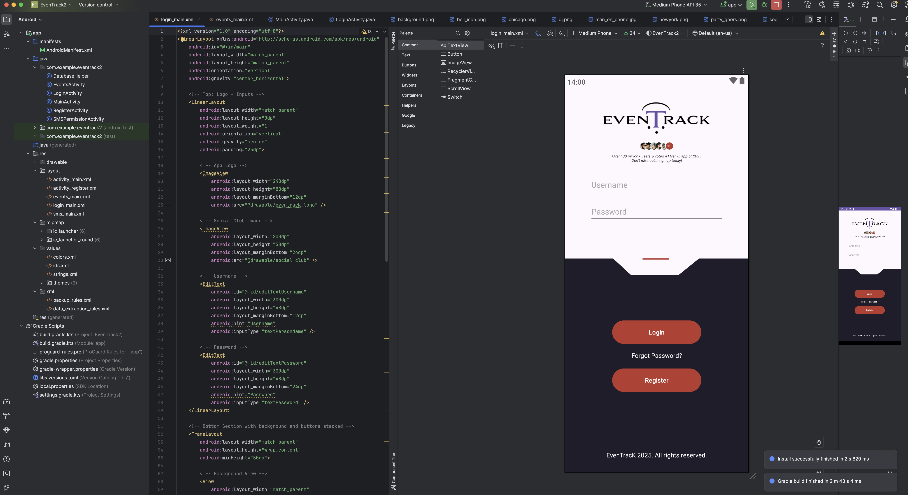
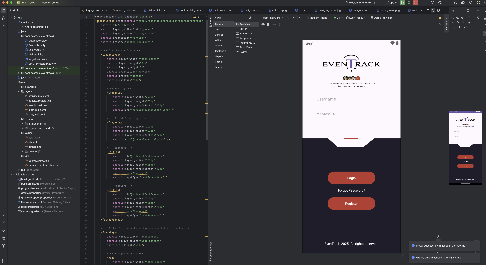

EvenTrack Artifact
Mobile App for Managing Events & Notifications
Code Review
This walkthrough highlights the Android logic, Firebase integration, and how permission handling and external testing methods were applied. It also demonstrates the use of SensorManager and activity lifecycle optimizations.
EvenTrack Code Review
Original Artifact
The original version of EvenTrack was a static prototype UI with minimal login functionality or real-time event management. It demonstrated layout ideas, screen transitions, and hands-on mobile development foundations.
Initial UI Mocks


Enhancement
The redesigned EvenTrack app now features a modern UI, secure Firebase Authentication, Firestore integration, SMS permission handling, and lifecycle-aware architecture. These updates improve both performance and usability.


 


Event Tracking App w/ Redesigned UI
Checkpoint Summary
| Milestones | Enhancement Category | Original Issue | Changes Made | Outcome Demonstrated |
|---|---|---|---|---|
| Milestone 1 | Software design & Engineering | v1.0 | Basic UI layout, minimal navigation, no backend | Redesigned mobile application UI in Figma, improved screen transitions, and established app layout consistency | UI/UX Principles, Design Prototyping, Wireframes |
| Milestone 2 | Software design & Engineering | v1.1 | Basic UI layout, minimal navigation, no backend | Redesigned mobile application UI in Figma, improved screen transitions, and established app layout consistency | UI/UX Principles, Design Prototyping, Color Theory |
| Milestone 3 | Software design & Engineering | v1.2 | Manual event filtering; slow performance | Restructing code for optimized performance | Efficient Algorithm Implementation |
| Milestone 4 | Software design & Engineering | v1.3 | No backup or cloud database integration | Implemented MongoDB Compass for local database management and data visualization. Also completed UI redesign | UI Redesign & Database Implementation |
Technical Reflection
I used MongoDB Compass for local database management and data visualization, following OWASP best practices. Course concepts from CS 405 and IT 365 guided my implementation of secure APIs, modular design, and asynchronous flows. Firebase permissions were carefully optimized to balance functionality and user privacy.
Learning & Outcomes
- Collaboration: Used GitHub for version control and workflow management.
- Communication: Created narrated walkthroughs of architectural decisions.
- Algorithms: Refined Java-based sorting, filtering, and indexing.
- Security: Secured endpoints and used strict input validation.
- Tools: Android Studio, Firebase, MongoDB Compass, Express.js, GitHub.
Future Enhancements
Future upgrades include full MongoDB backend connection, push notifications via FCM, Google Calendar integration, and social event sharing. These features will evolve EvenTrack into a full-featured productivity platform.

Roadmap: MongoDB Integration for Database Expansion